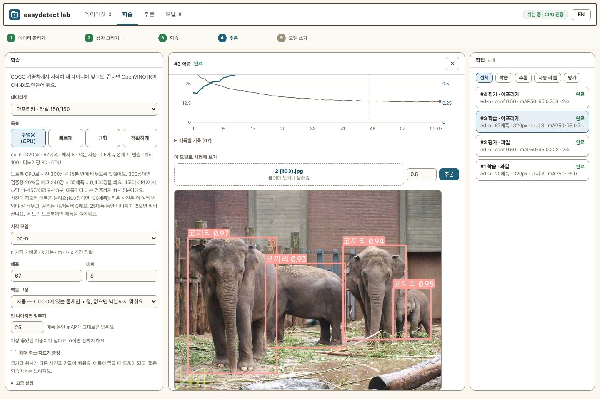
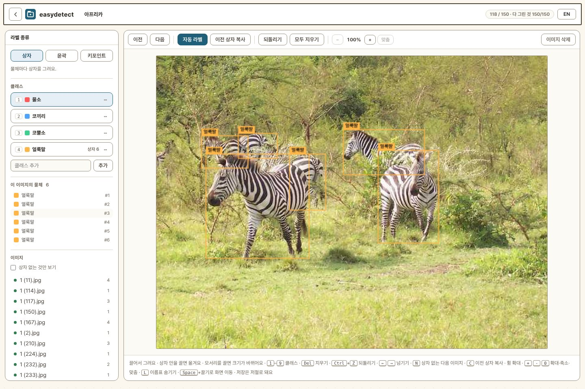

| 1~9 | 클래스 바꾸기 |
| C | 이전 사진의 상자 복사 |
| Del · Ctrl+Z | 지우기 · 되돌리기 |
| S · P | 윤곽 따기 · 점 찍어 그리기 |
| 휠 · Space+끌기 | 확대 · 이동 |
easydetect-lab-offline-win64.zip | 보통 노트북 (CPU로 학습) |
…-win64-intel-gpu.zip | 인텔 GPU 노트북 (Core Ultra, Arc) |
sudo apt install -y python3-venv git git clone https://github.com/themakerrobot/easydetect-lab cd easydetect-lab python3 -m venv .venv .venv/bin/pip install torch torchvision --index-url https://download.pytorch.org/whl/cpu .venv/bin/pip install -r requirements.txt .venv/bin/python run.py # http://127.0.0.1:8080